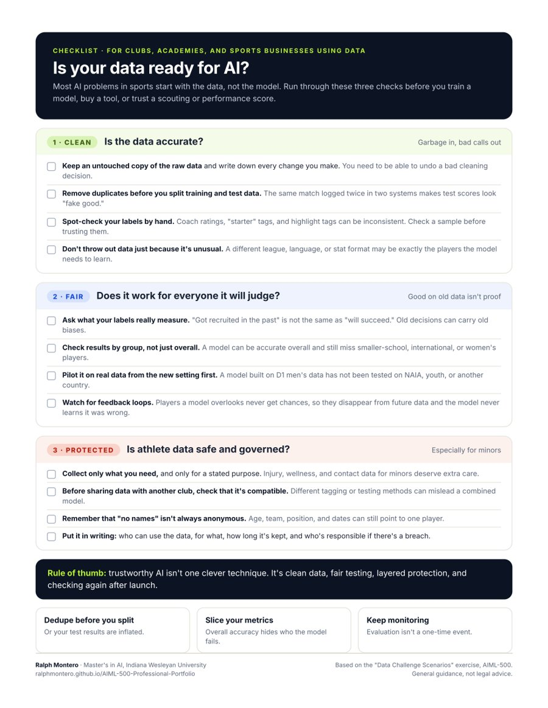

Most AI problems start with the data, not the model.
Sports organizations now collect more data than ever: GPS loads, match video, recruiting stats, wellness surveys. It's easy to assume more data means a better model. This exercise showed me how often the opposite is true. Duplicate records can make a model look better than it is, old decisions can teach it old biases, and sharing athlete data carelessly can put players at risk.
Three scenarios with an AI coach, turned into a checklist.
- The exercise. A guided session with an AI coach that gave me three realistic machine-learning problems. For each, I proposed a plan, defended it against follow-up questions, and named the trade-offs and risks.
- The portfolio version. I translated each scenario into a sports setting and built a one-page "Is your data ready for AI?" checklist with 12 checks across three areas: clean, fair, and protected.
Learn to spot data problems before they become model problems.
My objective was to practice approaches for cleaning and processing data, and to explain the challenges of sharing data, protecting privacy, and keeping it secure in machine-learning projects. Then I wanted to give sports organizations a simple way to check their own data before trusting an AI tool built on it.
Three scenarios, and what I proposed.
-
Data quality and cleaning 800K reviews
A team wanted to train a sentiment model fast on messy reviews with duplicates, spam, and labels taken from star ratings. I proposed standardizing the data first, removing duplicates before splitting training and test data, hand-checking a sample of labels, and using several signals to catch spam without filtering out real reviewers who just write differently.
-
Bias and responsible scaling Hiring model
A résumé-screening model trained on ten years of one company's hiring was about to launch in a new country at ten times the volume. I argued that strong results on old data only prove it works on a similar crowd, and called for accuracy checks by group, ongoing spot checks, and a pilot with real local data before launch.
-
Privacy, security, and governance Two hospitals
Two hospitals wanted to build a model together without handing over patient records. I proposed federated learning, but first checked that their data was even compatible. Then I named the risks that remain, like model updates leaking information or a compromised partner poisoning the model, and outlined a signed data agreement.
-
Translate for my audience
For the portfolio, I mapped each scenario onto a sports problem and turned the lessons into a printable checklist.
What I learned.
- Remove duplicates before you split the data. At first I thought duplicates were just messy for analysts. After a follow-up question, I realized the real problem: if the same record lands in both training and test data, the model is tested on answers it already memorized and "the scores look fake good."
- Labels need checking too. Star ratings aren't always honest sentiment. Sarcasm alone can flip a label.
- Overall accuracy can hide who the model fails. Results need to be checked group by group.
- Feedback loops are sneaky. If a model treats a group poorly, those people leave, they disappear from future data, and the decline looks like a natural trend instead of the model's fault.
- Privacy tools aren't magic. Federated learning changes what data moves between organizations, not what can still leak.
- Where I'm still growing: differential privacy. I recognized that information can leak, but I haven't yet worked out how stronger privacy settings can hurt accuracy for small groups and rare cases.
Exercise performance summary.
Generated by the AI coach at the end of the session, based on my actual answers. I used the nickname "Jarvis" in the session.
Scenario 1: Data Quality and Cleaning. Jarvis proposed cleaning and standardizing the dataset into a team-wide schema before training, with deduplication and removal of incomplete records. The strongest moment was reasoning through where deduplication must happen: before the train/test split, so the model isn't evaluated on data it effectively memorized — "the scores look fake good," as Jarvis put it. Jarvis also proposed hand-checking a sample of star-rating-derived labels to estimate error rates from things like sarcasm, and designed multi-signal spam detection (identical text across accounts, burst posting, links) while naming both failure directions: spam teaching fake patterns vs. over-filtering excluding non-typical writers.
Scenario 2: Bias, Distribution Shift, and Responsible Scaling. Jarvis identified that strong original-test performance only proves the model works on a similar crowd, proposed subgroup-level accuracy evaluation, ongoing hand-checking of fresh samples, and a pre-launch pilot on real data from the new population. The standout insight was the feedback loop: a model that misclassifies a group drives those users away, shrinking their representation in future training data — a decline the team might misread as natural distribution shift.
Scenario 3: Privacy, Security, and Governance. Jarvis proposed federated learning to keep patient data local, but — importantly — checked dataset compatibility first (harmonizing coding and labels across hospitals). Jarvis recognized residual risks unprompted after probing: model updates and the final model can leak patient information, and a compromised participant can poison the shared model, leading to secure aggregation and update validation. For governance, Jarvis proposed a signed agreement covering permitted uses, data deletion timelines, breach responsibility, and a joint review board for secondary uses.
Performance highlights: Jarvis consistently identified tradeoffs in both directions (filter strictness, privacy–utility costs) and independently distinguished evaluation validity from training quality — a maturity beyond just naming techniques.
Overall takeaway: Jarvis demonstrated that data quality, representation, and responsible scaling are inseparable from privacy and governance — trustworthy ML is layered defense plus evidence, not one clever technique.
The SchoolAI link may require a SchoolAI login. The summary above is excerpted from the session; the full version also lists an area to keep developing and a next step, both covered under Key takeaways.
The same problems, on the field.
| Exercise scenario | Sports version | What to do |
|---|---|---|
| Duplicate and mislabeled reviews | The same match logged in two tracking systems; coaches tagging "good saves" differently | Remove duplicates before splitting data, and spot-check tags by hand |
| Hiring model trained on one company's past | A scouting model trained on past D1 recruits, now used for NAIA, youth, or international players | Check accuracy by group and pilot with local data before trusting it |
| Feedback loop pushing users away | Players the model overlooks never get chances, so they never show up as success stories | Keep human review, and audit who the model passes over |
| Two hospitals sharing patient data | Clubs or academies pooling injury and wellness data, often for minors | Check data compatibility, share only what's needed, and sign a data agreement |
These are my applied examples, not tested models.
Three questions before you trust sports data.
1. Clean
Is the data accurate?
- Keep a raw copy and log every change.
- Dedupe before splitting training and test data.
- Spot-check labels by hand.
- Keep unusual data that's still valid.
2. Fair
Does it work for everyone?
- Question your labels. Past picks aren't proof.
- Check results by group, not just overall.
- Pilot in the new setting first.
- Watch for feedback loops.
3. Protected
Is athlete data safe?
- Collect only what you need.
- Check compatibility before sharing.
- "No names" isn't always anonymous.
- Put it in writing: use, retention, responsibility.
Rule of thumb: trustworthy AI isn't one clever technique. It's clean data, fair testing, layered protection, and checking again after launch.

Is your data ready for AI? One-page checklist
All 12 checks with sports examples, on one printable page. Built for club directors, academy staff, and anyone buying an AI scouting or performance tool.
What I used, and why.
- SchoolAIRan the "Data Challenge Scenarios Coach" from a structured course prompt.
- Data conceptsDeduplication, train/test splits, label auditing, subgroup evaluation, and distribution shift.
- Privacy conceptsFederated learning, secure aggregation, data minimization, and governance agreements.
- Claude (Anthropic)Help designing the checklist and this page. The exercise answers are my own.
Why this matters.
This artifact shows I can find the data problems that quietly break AI systems, and it gives sports organizations a checklist to catch them before they trust a model with real players.
Unique value
I've lived the sports side of these problems as a player who's been recruited, a coach who's evaluated keepers, and a business owner who handles families' information. That let me translate hospital and hiring cases into scouting and athlete-data problems that sports people recognize. It shows four skills: data cleaning, bias and fairness evaluation, privacy and governance thinking, and spotting trade-offs on both sides.
Relevance
Clubs and academies are adopting scouting tools, tracking systems, and wellness apps, often with minors' data. A bad dataset can produce unfair recruiting decisions or expose athletes' information. For employers, it shows I understand that most real AI work is data work.
How it connects to my value proposition: my promise is simple, tested, responsible AI. This artifact is about what "tested" really means: clean data, fair checks across groups, and protection built in before launch, not after.
Sources.
- Dwork, C., & Roth, A. (2014). The algorithmic foundations of differential privacy. Foundations and Trends in Theoretical Computer Science, 9(3–4), 211–407. https://doi.org/10.1561/0400000042
- Indiana Wesleyan University. (2026). Data Challenge Scenarios Coach [AI coaching prompt]. AIML-500 Machine Learning Fundamentals.
- McMahan, H. B., Moore, E., Ramage, D., Hampson, S., & Agüera y Arcas, B. (2017). Communication-efficient learning of deep networks from decentralized data. Proceedings of the 20th International Conference on Artificial Intelligence and Statistics, 1273–1282. https://arxiv.org/abs/1602.05629
- SchoolAI. (n.d.). SchoolAI [AI learning platform]. https://schoolai.com